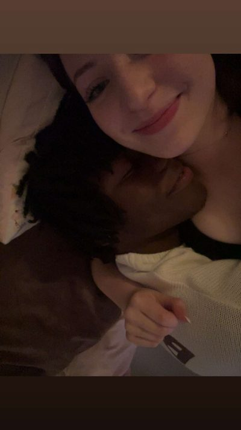

Build my portfolio site
Design and launch this site so anyone who searches my name finds my work.
First-year IT student building things for the web.

Hi, I'm Tammy. I'm learning web development and I like figuring out how things work and making them look clean and easy to use. This site is where I'll collect the projects I build as I go.
Design and launch this site so anyone who searches my name finds my work.
Go beyond HTML and CSS and make pages that respond and do things.
Find a beginner-friendly project on GitHub and get my first pull request merged.